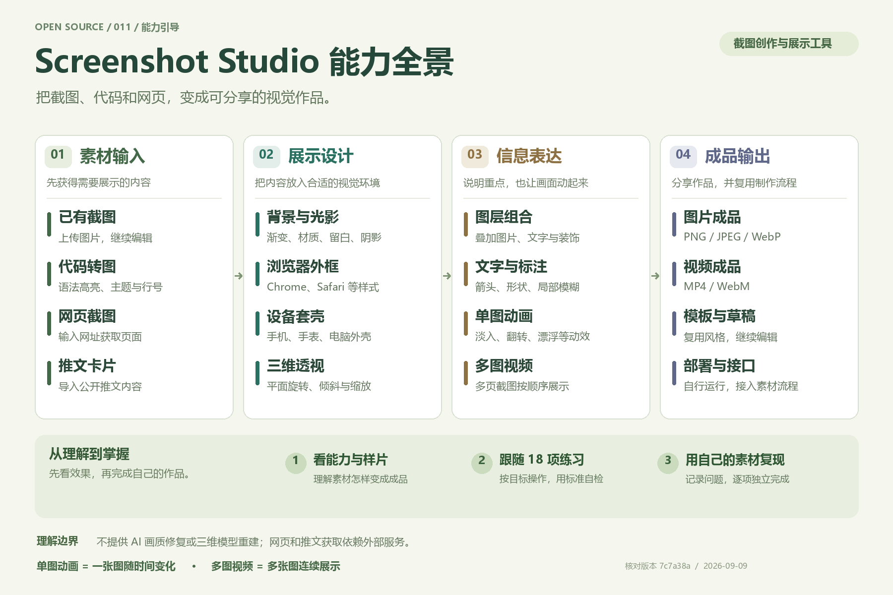
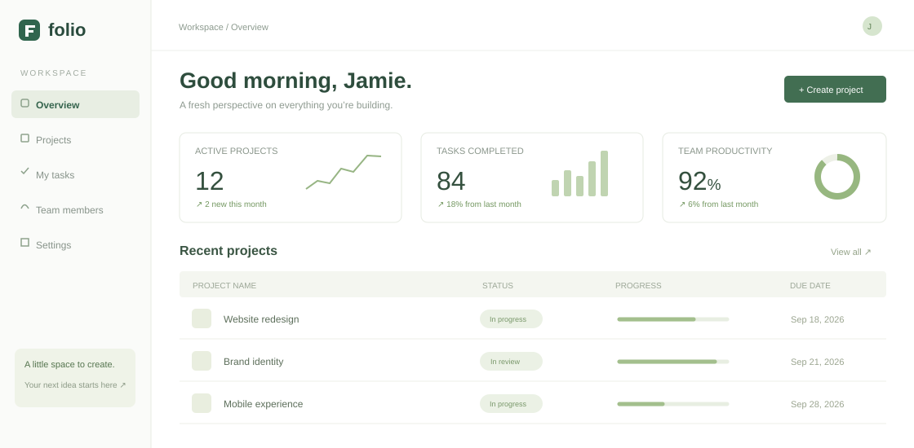
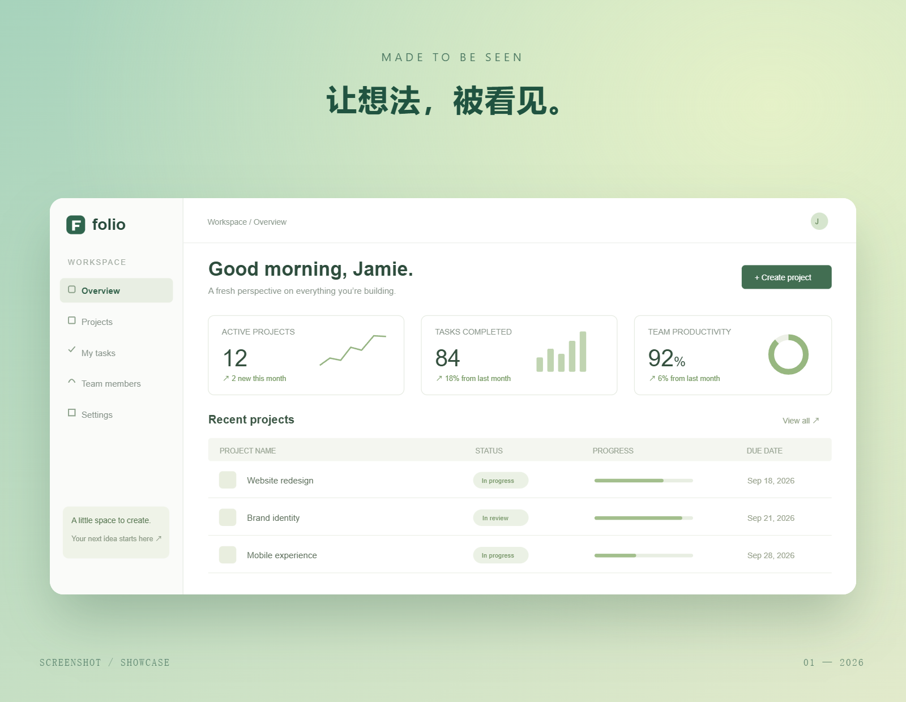

{kind=link}
{kind=link}
{kind=link}
做一张应用宣传图
上传截图 → Device 选设备 → BG 选背景 → Layers 加点缀 → Add Text 写标题 → Save 导出。
体会：素材组合与视觉层次从能力全景、真实成品到操作练习，在这一页完成学习与复盘。
理解美化、图层、标注、动画与导出如何组成完整作品。
从素材输入到作品输出，理解每一组功能解决什么问题。

下方直接展示原版效果、18 项能力和练习指导。需要实际操作时打开原版编辑器，本页作为中文操作指南。
右侧视频由原版时间轴的 Fade In 动画导出：3 秒、1920 × 1440、H.264。素材来自本研究绘制的虚构 Folio 工作台。
先看效果，再做一遍，最后用自己的截图复现。每项能力都有练习目标和完成标准。
每张卡片都包含作用、英文入口与操作建议。展开“练习与自检”完成一项具体任务，检查作品后再标记掌握。
当前分类已全部完成，可以切换“全部”继续复习。
“已体验”表示尝试过，“可独立完成”表示通过本卡的自检。进度和练习笔记保存在当前浏览器，属于个人自评，不代表软件验证结果。
上传截图 → Device 选设备 → BG 选背景 → Layers 加点缀 → Add Text 写标题 → Save 导出。
体会：素材组合与视觉层次Browser 选 Chrome → Add Text 写步骤 → Draw & Markup 画箭头 → Blur 覆盖示例敏感区域 → 导出检查可读性。
体会：图层与信息表达Motion 展开 Fade → 点击 Fade In → Animate 查看片段 → Export Video 选择 Animation → 导出 MP4。
体会：静态素材如何生成视频| 能力 | 当前原版界面 / 本次验证 |
|---|---|
| 截图与代码图片 | 原版 JPEG 和代码 PNG 已实际导出。主编辑器 Save 提供 PNG / JPEG / WebP 与 1× / 2× / 3×。 |
| 动画与视频 | 已导出 3 秒时间轴 MP4；底层有多种编码器。当前视频菜单展示 MP4 / WebM。 |
| 代码主题 | 当前代码页下拉菜单有 14 种主题；README 声明 32 种，不应直接当作此入口的可选数量。 |
| GIF / 5× | README 声明这些能力，GIF 底层编码路径存在，但当前主菜单没有对应入口。底层编码能力与当前界面入口需分别看待。 |
| 网址截图 | 本地接口调用 Microlink 获取 example.com 已返回成功；实际访问的网站仍受外部服务和网络条件影响。 |
| 推文 / 远程缓存 | 推文导入依赖外部公开内容；数据库与 R2 缓存未配置。普通编辑、图片和 MP4 导出已能运行。 |
当前交付为本地研究运行版，核对提交 7c7a38a。保留上游编辑与导出实现，仅增加本地启动、状态检测，并关闭布局中的广告／分析脚本与 PostHog 初始化。字体和外部导入仍可能访问网络。
主功能入口完整开放不等于每一种主题、输入格式和导出组合均已测试。它的核心是截图创作和展示，不提供 AI 去模糊、细节修复或内容重建。
在项目目录运行 projects/011-screenshot-studio/experiments/start-original.ps1，等待页面编译后重新检测。代码与字体首次安装需要网络。本地地址只适用于运行此项目的电脑；其他设备可使用官方在线编辑器。

改变的是呈现方式。截图中的文字、图表和界面内容保持原样；背景与光影帮助读者聚焦产品。
官网配图 / 产品发布下方新增代码卡片与成品对照。更多导入和视频能力可进入原版体验。
本页可编辑代码、切换三种主题并导出；原库提供更多语法主题。
⇄并排观察真实导出图，区分背景、外框、透视与标注各自的作用。
▷原库支持视频编码、网址截图和推文导入；本页保留源码说明。
基础语法高亮演示，支持中文与长行换行。
当前内容实时排版 · PNG / 2× / 浏览器内生成

留白分隔画面，渐变建立氛围，阴影让主体从背景中浮现。原始界面内容保持不变。
截图、代码、网页或推文。
提供需要展示的内容。
组合背景、窗口、图片和标注。
状态变化更新画面。
捕获样式与透视效果。
补做模糊等导出后处理。
图片编码；或逐帧渲染，
交给视频编码器生成文件。
截图是一个平面。CSS 的旋转、透视和阴影营造空间感，不会重建界面内部的三维结构。
关键帧指定起点和终点，插值计算中间状态。WebCodecs 或 FFmpeg WASM 将帧编码为视频。
普通图片导出默认尝试服务端 Sharp 压缩，失败后回退浏览器编码。网页截图调用 Microlink。
核对版本：7c7a38a，研究日期：2026-09-09。旧架构文档保留了 Konva、html2canvas 和水印的描述；当前画布与导出主路径以 HTML/CSS、modern-screenshot 为准。以下链接固定到研究版本。
它最适合截图进入传播和说明环节的那一步。
把后台、应用和网站界面，包装为风格统一的展示图。
通过文字、箭头和局部遮挡，让重点更容易被找到。
让代码、推文或功能亮点成为清晰易读的分享卡片。
对静态界面添加入场、翻转或漂浮，用于短时展示。
轻度透视 + 充足留白 + 一句短标题。画面适合吸引注意，细节说明放在后续图片里。
正面窗口 + 清淡背景 + 明确标注。让箭头靠近操作目标，避免文字挡住按钮。
暖色背景 + 大圆角 + 较宽留白。主题表达尽量简短，代码内容可使用上方代码卡片。
本次核对的核心能力是展示包装。放大导出可以提高排版和装饰元素的输出像素，但不会自动恢复原截图缺失的细节；需要画质修复时应使用相应图像处理工具。
上游仓库是完整的 Next.js Web 应用。可以自行部署或参考组件实现；若要嵌入自己的系统，仍需梳理编辑状态、字体和素材依赖、导出流程以及服务端接口，不能把它当成单一函数直接替换。
不等于。上游 README 声明 5×，当前主菜单实际为 1× / 2× / 3×。倍率描述输出缩放，主要让文字、边框等重新渲染的元素更细致；原始位图没有的细节不会凭空出现。本页截图与代码演示导出为 2× PNG。
编辑预览、透视和动画帧可以在浏览器完成。原库额外提供服务端图片压缩与网页截图获取：普通图片导出默认尝试 Sharp 接口，网页截图调用 Microlink。本页独立演示没有接入这些服务。
基础实验是独立简化实现。主页完整能力区连接已运行的原版，已实测 JPEG、代码 PNG、时间轴 MP4 和网址截图；其他功能入口与未测组合在主页能力区分别标注。
值得参考的是浏览器编辑、图层组合和导出流程。
不提供 AI 画质修复、内容重建或完整的视频剪辑能力。